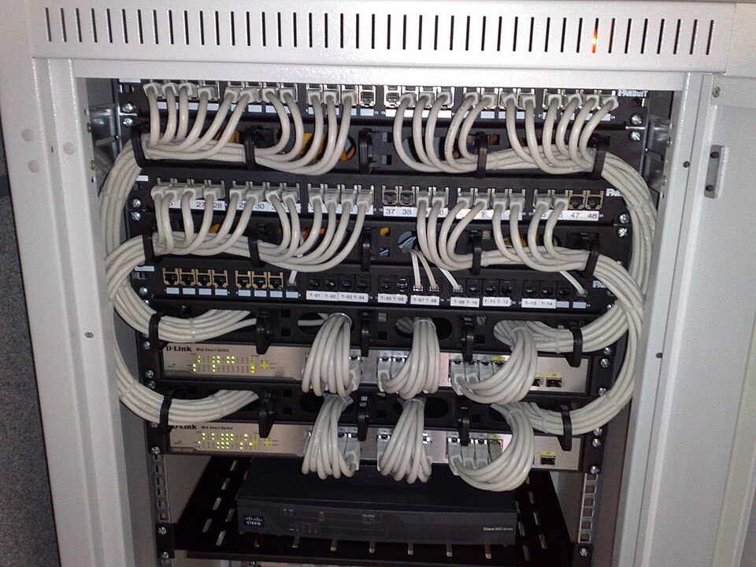

Módulo 08 — Redes en Linux
Información de interfaces

Comando moderno: ip
ip addr # alias: ip a
ip addr show eth0
ip link # interfaces (up/down)
ip route # tabla de ruteo
ip neigh # tabla ARP
ip -s link show eth0 # estadísticasComandos legacy (deprecated pero comunes)
ifconfig # similar a ip addr
route # similar a ip route
arp -a # similar a ip neigh
netstat -tulnp # ahora se prefiere ssEn distros modernas,ipyssreemplazan aifconfig,route,netstat. Aprendé los nuevos.
Configurar IP
Manualmente (no persistente)
sudo ip addr add 192.168.1.50/24 dev eth0
sudo ip link set eth0 up
sudo ip route add default via 192.168.1.1Persistente
Depende de la distro:
| Distro | Sistema |
|---|---|
| Ubuntu desktop | NetworkManager (nmcli, nmtui) |
| Ubuntu server | netplan (/etc/netplan/*.yaml) |
| Debian | /etc/network/interfaces |
| Fedora/RHEL | NetworkManager |
| Arch | systemd-networkd o NetworkManager |
Netplan (Ubuntu Server)
# /etc/netplan/01-netcfg.yaml
network:
version: 2
ethernets:
eth0:
dhcp4: false
addresses: [192.168.1.50/24]
routes:
- to: default
via: 192.168.1.1
nameservers:
addresses: [1.1.1.1, 8.8.8.8]sudo netplan try # prueba reversible
sudo netplan applyNetworkManager (nmcli)
nmcli device # interfaces
nmcli connection show # conexiones
nmcli connection up "Mi WiFi"
sudo nmcli device wifi connect "SSID" password "..."
nmtui # TUI interactivaDiagnóstico de conectividad
ping 8.8.8.8 # ICMP
ping -c 4 google.com # 4 paquetes
ping6 ::1 # IPv6
traceroute google.com # ruta de saltos
mtr google.com # combina ping + traceroute (interactivo)DNS
dig google.com # consulta DNS detallada
dig +short google.com
dig MX gmail.com # tipo de registro
dig @8.8.8.8 google.com # contra servidor específico
nslookup google.com # alternativa
host google.com # más simple
resolvectl status # systemd-resolvedConfiguración DNS
/etc/resolv.conf— clásico (en muchas distros, generado, no editar a mano)/etc/systemd/resolved.conf— systemd-resolved/etc/hosts— overrides locales
# /etc/hosts
127.0.0.1 localhost
192.168.1.10 server-devPuertos y conexiones
ss — socket statistics
ss -tuln # TCP/UDP, listening, numérico
ss -tulnp # con proceso (requiere sudo para todos)
ss -t # solo TCP
ss -t state established # conexiones activas
ss -tn dst :443 # destino puerto 443| Flag | Significado |
|---|---|
-t | TCP |
-u | UDP |
-l | listening |
-n | numérico (sin DNS reverse) |
-p | con proceso |
-a | all |
-s | resumen |
netstat (legacy)
netstat -tulnp # equivalente
netstat -anTransferencia HTTP — curl y wget
curl — Swiss army knife
curl https://example.com # GET
curl -i URL # incluir headers
curl -I URL # solo headers (HEAD)
curl -L URL # seguir redirects
curl -o salida.html URL # guardar
curl -O URL # guardar con nombre original
curl -s URL # silencioso
curl -X POST -d "user=ana" URL # POST con datos
curl -H "Authorization: Bearer TOKEN" URL # header custom
curl -u user:pass URL # basic auth
curl -F "file=@local.txt" URL # upload multipart
curl --resolve dominio:443:1.2.3.4 URL # forzar resoluciónwget
wget URL
wget -c URL # continuar descarga interrumpida
wget -r URL # recursivo (mirror)
wget -O salida URL
wget --limit-rate=200k URLSSH — Secure Shell
Conexión remota cifrada. Herramienta crítica de Linux.
ssh user@host
ssh user@host -p 2222 # puerto custom
ssh user@host comando # ejecutar comando remoto
ssh -i ~/.ssh/llave_custom user@host # con llave específica
ssh -L 8080:localhost:80 user@host # tunnel local
ssh -R 9090:localhost:3000 user@host # tunnel remoto
ssh -D 1080 user@host # SOCKS proxy
ssh -X user@host # X11 forwarding
ssh -A user@host # forward agent
ssh -v user@host # verbose (debug)Llaves SSH
ssh-keygen -t ed25519 -C "mi-comentario" # generar llave moderna
ssh-keygen -t rsa -b 4096 # alternativa
ssh-copy-id user@host # copiar pública al server
cat ~/.ssh/id_ed25519.pub | ssh user@host "cat >> ~/.ssh/authorized_keys"Config — ~/.ssh/config
Host servidor
HostName 192.168.1.100
User ana
Port 2222
IdentityFile ~/.ssh/id_ed25519_servidor
ServerAliveInterval 60Después: ssh servidor (en vez de ssh -p 2222 -i ... ana@192.168.1.100).
Permisos críticos
chmod 700 ~/.ssh
chmod 600 ~/.ssh/id_*
chmod 644 ~/.ssh/*.pub
chmod 600 ~/.ssh/authorized_keys
chmod 600 ~/.ssh/configTransferencia de archivos
scp — sobre SSH
scp local.txt user@host:/destino/
scp user@host:/origen/archivo.txt .
scp -r carpeta/ user@host:/destino/
scp -P 2222 archivo user@host:. # puerto custom (P mayúscula!)rsync — sincronización inteligente
rsync -avz origen/ destino/ # archive, verbose, gzip
rsync -avz origen/ user@host:destino/ # remoto
rsync -avz --delete origen/ destino/ # espejo (borra extras)
rsync -avzP origen user@host:destino # con barra de progreso
rsync --dry-run -avz src/ dst/ # simularDiferencia clave:origen/(con barra) copia el contenido;origen(sin barra) copia la carpeta misma.
sftp — interactivo
sftp user@host
> ls
> get archivo
> put local.txt
> byeFirewall — ufw (Uncomplicated Firewall)
sudo ufw status
sudo ufw enable
sudo ufw default deny incoming
sudo ufw default allow outgoing
sudo ufw allow 22/tcp
sudo ufw allow ssh # nombre de servicio
sudo ufw allow from 192.168.1.0/24 to any port 22
sudo ufw deny 8080
sudo ufw delete allow 8080
sudo ufw resetOtros frontends: firewalld (Fedora/RHEL), iptables/nftables (bajo nivel).
tcpdump — sniffer
sudo tcpdump -i eth0
sudo tcpdump -i any port 80
sudo tcpdump -i eth0 host 192.168.1.10
sudo tcpdump -w captura.pcap
sudo tcpdump -r captura.pcap
sudo tcpdump -nn -i eth0 'tcp[tcpflags] & (tcp-syn) != 0' # SYN packetsPara análisis profundo: wireshark (con GUI).
Otros útiles
nc -zv host 22 # netcat: testear puerto
nc -l 9999 # escuchar puerto (chat simple)
echo "hola" | nc localhost 9999
iperf3 -s # servidor (medir bandwidth)
iperf3 -c host # cliente
speedtest-cli # medir velocidad de internetErrores típicos que te dejan afuera del servidor
default deny incoming y el firewall arriba, la regla que falta es justo la que te mantiene conectado: la sesión actual sigue viva, pero no vas a poder volver a entrar.
sudo ufw default deny incoming
sudo ufw enable # ❌ te cerraste la puerta desde adentro
# ✅ el orden correcto:
sudo ufw allow OpenSSH # o: sudo ufw allow 22/tcp
sudo ufw enable
sudo ufw status verbose # verificá ANTES de cerrar la sesión0.0.0.0 "para probar". Eso no es "todas las IP de mi red": es todas las interfaces, incluida la pública. Bases de datos y caches abiertas así son de las formas más comunes de perder datos en un VPS.
redis-server --bind 0.0.0.0 # ❌ expuesto a internet
ss -tlnp | grep 0.0.0.0 # 🔎 revisá qué quedó escuchando en todas lados
redis-server --bind 127.0.0.1 # ✅ solo local
ssh -L 6379:127.0.0.1:6379 user@host # ✅ acceso remoto por túnel, sin abrir el puertosudo netplan apply # ❌ si la config está mal, chau conexión
sudo netplan try # ✅ aplica y revierte solo a los 120 s si no confirmásrsync --delete con el origen equivocado. --delete borra en el destino todo lo que no esté en el origen. Si invertís los argumentos, el "espejo" te vacía los datos buenos en lugar de respaldarlos.
rsync -avz --delete /backup/ /datos/ # ❌ invertido: destruís los datos
rsync -avz --delete --dry-run /datos/ /backup/ # ✅ simulá y leé la salida completa
rsync -avz --delete /datos/ /backup/ # ✅ recién ahí, en serioCheckpoint — ¿lo tenés claro?
Si el firewall ya bloquea el puerto, ¿por qué igual conviene que el servicio escuche en 127.0.0.1 y no en 0.0.0.0?
Por defensa en capas. El firewall es una sola config que alguien puede desactivar, resetear o dejar mal después de un reinicio. Si además el proceso solo bindea el loopback, el puerto no existe en la interfaz pública: aunque el firewall se caiga o aparezca una interfaz nueva (una VPN, una IP flotante, un contenedor), nadie de afuera llega. Escuchar en 0.0.0.0 significa "todas las interfaces, las de hoy y las que aparezcan mañana".
¿Qué diferencia hay entre ssh -L y ssh -R? ¿Cuál usás para llegar a una base que solo escucha en el localhost del servidor?
Cambia dónde se abre el puerto y hacia dónde viaja el tráfico. Con -L (local) el puerto se abre en tu máquina y lo que le mandes sale por el túnel y lo entrega el servidor: es el que usás para la base remota (ssh -L 5432:127.0.0.1:5432 user@host y después te conectás a localhost:5432). Con -R (remoto) es al revés: el puerto se abre en el servidor y el tráfico entra hacia tu máquina, útil para exponer algo tuyo que está detrás de un NAT.
El ping al servidor no responde pero la web anda igual. ¿Cómo puede ser?
Porque ping usa ICMP, un protocolo distinto del que usa tu servicio. Muchísimos firewalls y proveedores cloud bloquean ICMP por defecto sin tocar TCP, así que "no pinguea" no significa "está caído". Para probar un servicio hay que probar ese puerto: nc -zv host 443, curl -I contra la URL, o ss -tlnp desde el propio server. Al revés también pasa: el ping puede responder porque el kernel está vivo aunque el servicio esté muerto.
Ejercicios
- Encontrar tu IP pública:
curl ifconfig.me - Listar todos los puertos TCP escuchando con
ss -tlnp - Generar un par de llaves SSH ed25519 y copiarlo a una VM
- Crear
~/.ssh/configcon un alias para una conexión SSH - Hacer un
rsynccon--dry-runpara sincronizar dos directorios
🧠 Autoevaluación rápida
Respondé sin mirar arriba. Cada pregunta te explica el porqué.
1. En scp, ¿con qué flag indicás un puerto SSH distinto del 22?
ssh -p 2222 va en minúscula, pero scp -P 2222 va en mayúscula (en scp la -p minúscula preserva timestamps y permisos).2. ¿Qué te muestra ss -tuln?
-t TCP, -u UDP, -l listening, -n numérico (sin DNS reverse). Para ver qué proceso los abrió hay que sumar -p (y sudo).3. En rsync -avz origen/ destino/, ¿qué cambia la barra final de origen/?
origen/ copia lo de adentro; origen (sin barra) mete la carpeta entera dentro de destino. Para borrar los archivos que sobran está --delete.